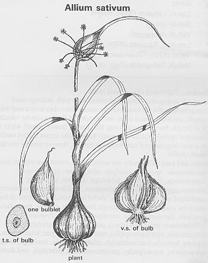
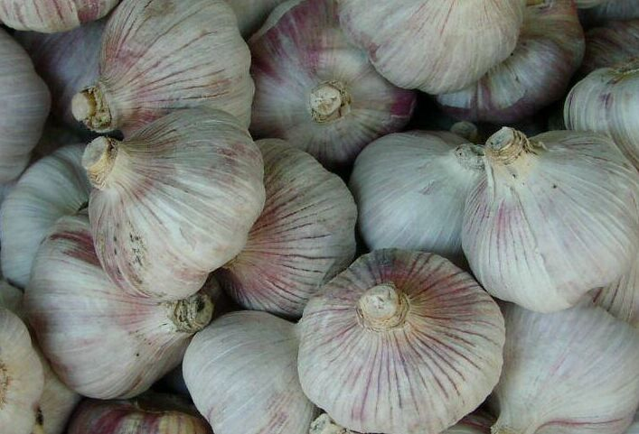

Allium sativum
Linn.
----- Taxonomic Details

----- Correct Name
----- Classification
----- Synonyms
----- Common Names
Other Biological Details
----- Habit and Habitat
----- Diagnostic Features
----- Reproductive Biology
---------- Breeding System
---------- Phenology
---------- Pollinators
---------- Seed Biology
---------- Seed Germination
------ Cultivation
----- Major Pests and Diseases
Economic Potential and Uses
----- Parts Used
----- Uses
----- Harvesting Practices
----- Produce and Products
----- Chemistry
----- Processing Techniques
----- Other uses
----- Economic Potential to the
Country
----- Export Potential
Miscellaneous Information
Literature
Taxonomic
Details
Correct Name
: Allium sativum Linn.

Family : Liliaceae
Synonyms :
Common Names :
Gujarati - Lasan, Lasuna
English: Garlic
Oriya: Rasuna
Kashmiri: Ruhan
Punjabi: Lassan, Lasun
Hindi: Lasun, Lessan, Labsun, Lahasun, Lahsun,Lasun
Urdu: Lassun, Leshun
Bengali: Rashun
Marathi: Lusson, Lasun,
Assamese: Naharu
Malayalam: Vellulli, Vellaipundu,
Tamil: Ullipundii, Villhappundu, Vallai-pundu, Vellai puntu
Telugu: Velluri, Lasunah,Rasonah,Tellagadda, Vellulli
Kannada: Bellulli
Back to Top
Other
Biological Details
HABIT & HABITAT

It
is a herbaceous annual for bulb and a biennial for seed production. Original
abode of garlic is said to be Central Asia and southern Europe, especially Mediterranean
region. Garlic has long been known as a cultivated plant it is among the most
ancient of cultivated vegetables giving pungency of the genus onion. This has
been in cultivation for centuries. Europeans, especially the Italians and Spanish,
have used this regularly for 2,000 years and more. The Spanish are believed
to have brought garlic to the New World (USA), where it became an immediate
favorite with Red Indians. They liked it better than any of the other root or
bulb crops from Europe.
Availability :
It is found in India covering Central, North,South and Western
zones in the states like Goa Daman Diu, Himachal Pradesh, Karnataka, Maharashtra,
Rajasthan, Tamil Nadu and Uttar Pradesh.
District: Ahmadnagar, Allahabad, Chamoli, Chikmaglore, Goa, Lahaul Spiti,
Nagpur, Osmanabad, Palni hills, Pune and Thane,
Status :
Back to Top
DIAGNOSTIC FEATURES
Garlic is a frost hardy bulbous perennial erect herb of 30-100cm
in height with narrow flat leaves and bears small white flowers and bulbils
. The scape of garlic is smooth, round and solid for its entire length like
onion which is hallow. Many cloves of garlic do not produce flower stalks. The
inflorescence may be partially or not at all exerted, its bulbils forming a
swelling somewhere within the false stem a few cm above the bulb. They consists
of 6-35 smaller bulbet is called "cloves" and is surrounded by a thin
white or pinkish papery sheath.
Back to Top
REPRODUCTIVE BIOLOGY
Inflorescence is a cymose umbel enclosed
in a beaked spathe, consisting of flowers and bulbils. some varieties develop
bulbils only where the flower is aborted at bud stage. Flowers are usually sterile,
small variable in number and sometimes absent, carried on long pedicels, seldom
open and may wither in the bud. Perianth six, in two whorls of three each, lobes
free, white to purple tinged. Stamens six, inserted within the perianth in two
whorls of three each. Anthers exerted. Ovary oblong-ovoid and emarginate at
apex, superior, tricarpellary, trilocular with an exerted style.
Breeding System :
Phenology :
Flowering occurs in Feb-April. Flowers always
abort after forming. and also flowering occurs during Jun - Sept.,
Pollinators:
Self pollinated.
Seed Biology :
Seeds are rarely produced. Since garlic has become exclusively vegetatively
propagated by cloves, such cultivars still bolt by inflorescence bulbils. Some
modern cultivars may produce flowers mixed with bulbils but the flower never
set seeds.
Seed Germination :
Seed Rate and Sowing Methodology:
Garlic is propagated by cloves which are detached individually from the bulb.
About 350 to 500 kg of cloves are required to plant a hectare. For highest yield,
the cloves are dibbled at a spacing of 15 cm between row to row and 7.5 cm within
the row. The field is divided into small plots to facilitate proper irrigation.
The crop is sown from September to November in the plains of Northern India.
It is propagated mainly by vegetative means. Many cultivars of garlic that are
known now have been arisen from vegetative mutations during long period of garlic
cultivation. The variation among cultivars is great and conspicuous differences
can be found in plant size, yield, content of solids, time of maturity, ease
of bolting, size, shape and color of cloves. for species like garlic which do
not undergo normal cross fertilization and genetic exchange, in vitro tissue
culture techniques open up the possibility of genetic modification and perhaps
genetic interchange. There by genetic variability can be generated and the selection
of improved types becomes a possibility. Considerable progress has been made
with garlic.
Garlic is propagated vegetatively by cloves.Since the flowers always abort,
bulbils are formed in the inflorescence which give rise to plants. Bulbils produced
in some varieties are also being used as planting material.
Cultivation:
Soil and Climate:
Garlic grows under much the same conditions as the onion, except that it favours
a richer soil and a higher elevation (900-1,200 m). A well drained, moderately
clayey- loam soil is best suited for its cultivation. It requires a cool and
moist period during growth and a relatively dry period during crop maturing.
It takes longer (4-5 months) than onion to mature and is consequently grown
as a late-season irrigated crop. In South India, it is grown in rotation with
ragi (Eleusine coracana), chillies, maize, potatoes and beans.
In India, mainly small cloved garlic-bulbs with more than 20 cloves are cultivated.
The export specifies bulbs of more than 40-mm size. Recently NHRDF has recommended
bigger cloved garlic varieties -G. 282 for plains and Agrifound Parvarti for
Northern hills-mainly for exports. Varieties with small cloved types are Agrifound
White, Yamuna Safed. Garlic bulbs 40-60 mm (dia.) with 10-15 cloves in each
bulb are preferred for export. China, Spain and France are the major suppliers
of garlic having bigger cloves of above specifications. Wholesale price of garlic
varies with locations and seasons.
Manurial requirements:
Since garlic needs a richer soil than onion, the main requirement is that of
nitrogen. About 125 to 150 kg of nitrogen per hectare should be applied in 2
doses for best results.
Back to Top
MAJOR PESTS & DISEASES (LINK it to
the Allium cepa pages)
Pests:
Storage pests:
Stored garlic is infested with larvae of Ephestia elutella which eat
bulblets from inside. Fumigating bulbs with phosphine at 1-4 tablets/m3 for
12 hours controls storage pests without adversely affecting clove sprouting.
Treatment may be repeated every 2 months (Cozenza etal., 1981).
Diseases:Fungal:
Purple blotch: Caused by Alternaria porri causes the
leaves to dry up and turn purple. so long rotations, good drainage and spraying
with copper fungicides are recommended.
Bulb rot: Caused by Sclerotium rolfsii Attaks the scales
and collars in wet weather when the bulbs are nearly mature. to control remove
infected plants and crop debris, ploughing in the top soil.
Other fungi attaching garlic are Alternaria palandii, A. tenuis, Aspergillus
niger, Botrytis allii,Puccinia alli etc.
Certain bacteria also attach garlic. Erwinia carotovora, Phytobacterium
siccatum, Pseudomonas siccata. are some of the bacteria that attack.
Mosaic and yellow dwarf viruses and dodder also attack these plants. The
nematodes that attack are Aphelenchoides ritzemabosi, Anguillulina dissaci,
Meloidogyne javanica etc.
Physiological disorder:
The following two physiological disorders in garlic bulbs at maturity are reported:
(1) ' Rubbering ' of garlic bulbs before harvest (Peter et al., 1995).
(2) 'Premature Sprouting 'of garlic bulbs.
Rubbering of Garlic Bulbs :
Rubbering is a physiological disorder observed in fresh garlic bulbs at harvest.
It is identified by dent formation with the pressure applied through tip of
the thumb. The dent returns to original form on release of the pressure. The
rubberized bulbs become spongy when dried. In Tamil Nadu hills, there exists
this worrisome field problem.
Pre-mature Sprouting of Bulbs:
Premature sprouting of garlic bulbs in field is also a physiological disorder,
in which cloves, after initiation, continue to sprout in the field by producing
leaves instead of bulbing. The sprouts from the cloves will burst out through
leaf sheath. Sprouting leads to splitting of cloves which reduces market quality
of bulbs.
Back to Top
Economic
Potential and Uses
Parts used:
Bulbs, Seeds or cloves
Uses:
-
Garlic has since long been recognized all over the world as a valuable condiment
for foods, and also as a popular remedy for various ailments and physiological
disorders.
-
Garlic as Condiment:
Garlic is used practically all over the world for flavouring various dishes.
In America about 50% of the entire output of fresh garlic is dehydrated and
sold to food processors for use in mayonnaise products, salad dressings, tomato
products and in several meat preparations. Further, raw garlic can be used in
the manufacture of garlic powder, garlic salt, garlic paste, garlic vinegar,
garlic cheese croutins, garlicked potato chips garlic bread, garlicked meat
tit-bits and garlicked bacon, etc. which have been boosted in the American market.
Recently, spray-dried garlic products have also been put in the market, though
'liquid garlic' preparations have also been available for some years, in India
as well.
In Italy Europe, and particularly in Latin American countries, spectacular
popularity
of garlic is shown by the methods by which it is boosted by the garlic growers.
In India and other Asian and Middle East countries, it is already being used
in several food preparations, notably in chutneys, pickles, curry powders, curried
vegetables, meat preparations, tomato ketchup and the like. Of recent, there
has been a considerable demand by the food industries in this country for garlic
powder and garlic paste as a condiment.
Garlic is also used ground with other spices, sliced and fried or bruised and
steeped in water, in vegetables, meat and fish preparations to act as an antiseptic
and to improve flavour and digestion. These properties make it a desirable gradient
for pickles as well.
Garlic has a strong characteristic odour and acrid taste. In most Mediterranean
and Asian countries, garlic forms a part of almost all dishes, mainly to flavour
meats, vegetables, stews, soups, salads, tomato dishes, sauces, and in preparation
of sausages
and hot pickles.
Oil of garlic has lately been appreciated as a valuable flavouring agent for
use in all kinds of meat preparations, soups, canned foods and sauces on a commercial
scale.
Harvesting Practices:
The crop is ready for harvesting when the tops turn yellowish or light brownish,
and show signs of drying up, usually about a month or so after the emergence of
seed stalks. The bulbs are lifted, freed from earth and the leaves are tied at
the top. The bulbs are cured for 3 to 4 days in the shade before storing them
in an ordinary room. Tops are removed before marketing the produce. Thoroughly
cured garlic bulbs store well in ordinary well-ventilated room/store.
Yeild:
After removing the tops, the yield per hectare may vary from 4,000 kg to 10,000
kg, depending on the soil, variety and care taken.
Produce
and Products
Garlic Powder:
Garlic powder is one of the fastest growing items in the garlic processing industry;
not only the powder but also the so-called 'Instant Minced Garlic and Garlic
Flakes'.
Fresh garlic repels many American home-makers because of its clinging odour, but
garlic powder is easy to use and has no undesirable features. The author and his
associates have published a series of R&D papers on manufacturing, packaging
and storage of garlic powder according to which the following additional information
is available. Anti-bacterial activity: 15-31 mm (by cup-plate method); allyl sulphide-
0 57 to 2.70%; total sulphur: 594-634 mg/100 mg; volatile oil: 0.04-0.1%; alcohol
extract- 7.22%- non-volatile ether extract: 6.20%; volatile ether extract: 0.10%;
starch: nil; total ash- 3.46% water soluble ash: 3.4%; acid insoluble ash: nil;
total bacterial load: 5.0 x 104.
Commercial Forms of Dehydrated Garlic :
The various forms of dehydrated garlic are all produced by slicing peeled sound
garlic cloves into flat slices (of thickness agreed between the interested parties),
which are dehydrated, graded and further processed as necessary.
The following broad categories are recognized in the trade, though commercial
contracts may include modified requirements for particle size:
Dehydrated Garlic Slices or Rings:
Dehydrated garlic in pieces larger than 4 mm (largest dimension) - slices and
pieces of garlic are obtained by cutting garlic cloves into slices and removing
broken pieces, smaller than 4 mm by sieving.
Garlic Flakes or Garlic in Pieces:
Dehydrated garlic passing through a sieve of 4 mm aperture size but retained
on a sieve of 1.25 mm aperture size - a product comprising particles without
definite shape.
Garlic Gritts:
Dehydrated garlic passing through a sieve of 1.25 mm aperture size but retained
on a sieve of 2.50 mm aperture size.
Garlic Powder:
Dehydrated garlic passing through a sieve of 0.25 mm aperture size; a uniform
product of which 95% passes through the sieve.
Garlic Salt:
Comprising 20% garlic powder, 78% table salt, and 2% desiccant.
Odourless Garlic Powder.
A patented process developed at the CFTRI, Mysore.
Oil of Garlic:
Essential oil of garlic obtained by steam distillation. Garlic Oleoresin is
manufactured by suitable extraction technique.
Back to Top
Chemistry
Fresh Garlic. Fresh peeled garlic cloves (bulblets) have the following composition-moisture:
62.8%; protein: 6.3%; fat: 0.1%; mineral matter: 1.0%; fibre: 0.8%; carbohydrates:
29.0%; calcium: 0.03%; phosphorus: 0.31%; iron (Fe): 0.0001%; calorific value
(food energy): 142 calories/100 g; vit A: 0; nicotinic acid: 0.4 mg/100 g; vit.
C:13 mg/100g. Dehydrated Garlic. Dehydrated garlic has the following values -
moisture- 5 2%- protein: 17.5%; fat: 0.6%; .mineral matter: 3.2%; fibre: 1.9%;
carbohydrates- 71.4%; calcium: 0.1%; phosphorus: 0.42%; iron: 0.004%; sodium:
0.01%; Potassium-1.1% vit A- 175 I. U./100g; vit-B-: 0.68; vit. B2 0.08; niacin:
0.7%; vit. C: 12.0 mg/100g; calorific value (food energy); 380 calories/100 g.
Back to Top
Processing Techniques
Preparation of Garlic Bulbs for Automatic Peeling and Processing
The garlic bulbs are beaten with a wooden stick to separate bulblets. Food-grade
edible oil is applied to bulblets with hand, and these are then put in small gunny
bags and rubbed to remove the outer skin of the bulblets. The material is then
winnowed to separate skinned bulblets which are used for the manufacture of garlic
paste or for dehydration.
Automatic Peelers of Garlic Cloves.
For peeling cloves of garlic, cloves are placed on a shake-table and spread into
a monolayer, whilst being moved forward. Cloves drop onto a sloped feed-tray and
are positioned individually in cups (via flexible cylinders) into which nozzle
extends to provide a timed blast of pressurized air for peeling. Skins are then
removed under the action of suction fan.
American Patent on Garlic Peeling. Motor-driven patented equipment for automatic
peeling of garlic or similar food products is described. It has a housing, forming
a processing chamber, and an abrasive rotary disc in the chamber which abrases
the skin or husk from the product. A moveable gate partially obstructs a discharge
slot at the side of the chamber, but in its lowered position, the gate permits
continuous ejection of peelings while retaining the product. At the end of each
peeling operation, the gate. Is raised enabling centrifugal ejection of the product
by the rotary motion of the disc. A fast, high throughput is obtained because
manual unloading and separation are not required. The equipment may be an accessory
which engages on a food processor base.
Taiwan Patent for Peeling and Drying Garlic. Garlic drying and patented peeling
equipment is described, wherein raw bulbs are stored in an upper tank connected
to a hollow-walled drying runnel into which bulbs can be dropped. Bulbs are dried
by hot air, passed through the inner surface of this runnel (from a hot air tube
connected to the outer wall), and are mechanically pushed down into a membrane
peeling cylinder. This operates through a helical current of compressed air provided
through tapered nozzles and has an exhaust tube into which membrane pieces are
guided by a curved plate.
Rapid Processing of Garlic Oleoresin.
Effects of solvent, sample particle size, sample:
Solvent ratio, extraction temperature and time for extraction of garlic oleoresin
from fresh garlic (Allium sativum) were investigated. Of the 11 solvents
studied, results suggest methyl alcohol is the solvent of choice for garlic oleoresin
extraction. Optimal particle size of garlic samples, extraction temperature and
ratio of garlic: methyl alcohol were respectively: 20 mesh; 25°C and 1 -3
(w/w). Results suggest that optimal extraction time was approx. 4hr. Using the
above extraction conditions, the yield of garlic oleoresin was 21.3%. When stored
at 5,25 or 40° C for 0-60 days, a decrease in 'L' and V and an increase in
the 'a' ' Hunter colour values of garlic oleoresin were observed. Ryruvate content
of garlic oleoresin decreased as storage temperature increased; pH of the oleoresin
during storage was closely related to pyruvate content .
Quality Standards
International standards both for the dehydrated garlic and garlic powder are given
in Table 2.16. No standard has yet been formulated by ISO, EOA, BIS or Agmark
organizations for other garlic products.
The containers of dehydrated garlic should be stored in covered premises,
protected from the sun, rain and excessive heat. The store-room should be dry,
free from unpleasant Odours and proofed against the entry of insects and vermin.
Transport
The containers of dehydrated garlic and garlic powder should be clearly marked
with warning against careless handling which might lead to perforation of the
containers.
They should be kept dry and cool, stored well away from ships' boilers or bilges.
Other uses:
-
Garlic Oil as Insecticide :
Recently, studies conducted at the Bhabha Atomic Research Centre, Bombay, on
differential toxicity of garlic oil to housefly and 'khapra' beetle have indicated
that adults as well as the larvae of both the species respond to the vapours
of garlic oil by exhibiting hyper-excitability, atexia, salivation and excretion;
the usual signs of poisoning when treated with insecticides. Thus, garlic oil
is considered to be an effective insecticide.
-
According to the Unani and Ayurvedic systems, as practiced in India, garlic
is carminative and is a gastric stimulant and thus aids in digestion and absorption
of food. It is also given in flatulence. In modem allopathy, it is being used
in a number of patented medicines and other preparations. Besides, garlic is
also anthelmintic and antiseptic. The active principle in garlic is an antibiotic
allicin, which is an enzymatic cleavage product from its precursor, 'allin',
naturally present in garlic. However, allicin is highly thermo- labile (sensitive
to heat) and should be protected from heat or high storage temperature. It is
also very hygroscopic and hence great care is needed in its moisture-proof packaging.
- Garlic Paste/Mixture as Biofungicide:
A garlic remedy for the dreaded slow-wilt disease in black-pepper has been described
by Shanthimole and Pailoor (1991) which is as follows.
Soak 1 kg of garlic bulbs and % kg of mustard in water for one day. Mix them,
grind them to paste and add 100 litres of water. Stir it thoroughly and drain
the mixture to the pepper-vine base at the rate of 1 litre per vine, once in
20 days, when the plants are affected. The application of this mixture, once
in June and once in September, can be a preventive or precautionary measure
against slow-wilt. This novel and simple technique has been used by many growers
with positive results against 'slow wilt' when it is in the initial stage of
spreading or as a preventive measure also.
- Garlic Oil as an Adhesive:
Garlic oil is highly volatile. It is very useful as an adhesive for broken glass.
- Garlic Residue with Antibacterial Properties:
According to an American patent, the residue of garlic, obtained by alcoholic
extraction and distillation, contains a bacteriostatic and bactericidal substance,
identified as allyl disulphide oxide'.
On steam distillation of crushed garlic at atmospheric pressure, the major odour
producing principle 'allicin' decomposes down to diallyl disulphide and other
disulphides.
That explains why the volatile oil of garlic consists chiefly of disulphides.
However, allicin' can be isolated by steam distillation at a reduced pressure.
It may also be clarified that the mother precursor alliin does not possess bactericidal
properties. It is only allicin produced as a result of enzymic cleavage of alliin
which is bactericidal.
Garlic in Medicine:
Garlic (Allium sativum) is a spice with a strong flavour, universal appeal
and medicinal value. As a medicine, garlic was largely used by the ancient physicians
of India to administer in fevers, coughs and debilitating conditions.The medicinal
qualities of garlic have been celebrated since earlier times. Pliny has said
that it is a remedy for 61 ailments, while Aristotle, Sotion and Dioscorides
also have sung its praises in their writings. An English .writer says that in
India, garlic has been a favourite for centuries for "improving the voice,
intellect and complexion, promoting the union of fractured bones, and helping
to cure nearly all the ills which form from flesh to hair.
Garlic has been used as an attempted cure for dropsy, pherenitis, jaundice,
scrofulous swellings of the neck, bronchitis, tuberculosis and many other ailments.
Externally, garlic is used as a remedy for skin and ear diseases. In western
medicine also, it is used to a fairly large extent. Garlic juice mixed with
3 or 4 parts of ordinary or distilled water has been used as a lotion for washing
wounds.
The inhalation of garlic oil or garlic juice has been recommended in cases of
pulmonary tuberculosis, rheumatism, sterility and impotency.
Garlic juice is used for various ailments of stomach; as a rubefacient in skin
diseases and as ear drops in ear-ache. The juice diluted with water can be used
against duodenal ulcers. In Combodia, the leaves are used in the treatment of
asthma.
Because of its highly curative properties, it is described as derived from Amrita
or Ambrosia. The prejudice against the use of garlic in India, particularly
among the. Brahmins, appears to have originated from its popularity with the
foreign invaders.
The prejudice became so intense that not only the socio-religious writers like
Manu depre-cated its use, but also the authors of medicine like Kashyapa disparaged
it. The recent scientific evidence about its several highly curative properties
clearly shows that the old prejudice was not justified. On the other hand, it
is one of the cheapest and most efficient folk medicines in the hands of housewife
and the layman alike for day-to-day use, which should be encouraged. Recent
scientific tests on rabbits proved that garlic inhibited, to a certain degree,
the development of extremely several forms of experimental
hypercholestrinaemia.
In an acute experiment on 75 cats, garlic fractions displayed a considerable
hypotensive effect. In dogs, with experimental hypertension, garlic reduced
their systolic arterial tension to values nearly as high as the normal ones.
Clinical application of garlic in 114 human patients with a clear-cut hypertension
and atherosclerosis, markedly improved their complaints, and in the overwhelming
majority, provoked a drop of their systolic arterial tension by 8 to 33 mm and
their diastolic one by 4 to 20 mm of mercury. Some biochemical tests improved
as well. In small doses, garlic intensified the tones of the intestinal muscles,
thus increasing peristaltic movements, while in large doses, it inhibited them.
In experiments on animals and human workers exposed to chronic lead intoxication,
garlic has been found to be an efficacious preventive and curative drug against
saturnism.
In Ayurvedic system, garlic has been reported/to be beneficial in over 18 diseases
of man.
- Garlic Use for Cancer:
Garlic antibiotic allicin on malignant tumours of humans as well as of animals
has been found useful. Transplanted tumors of Jensen sarcoma in rats regressed,
and in some cases, completely disappeared after the injection of 1-3 mg of
allicin,
given either intramuscularly or directly into the tumor. However, all types
of tumors do not respond equally well. This aspect needs further in-depth medical
studies.
- In Human Nutrition:
There is an increase in the intestinal synthesis of vitamin B; on the administration
of garlic to human subjects; as alli-thiamine is formed by the reaction of thiamine
and allicin, which is also absorbed faster than thiamine in the intestine.
Thus, there appears to be a fundamental scientific basis for the therapeutic
use of garlic and also on the utilization of food ingredients. It also provides
a scientific explantation for its popularity as a folk medicine for over thousands
of years in India, China and Egypt.
Garlic decreases
blood cholesterol and blood sugar, have demonstrated that beneficial actions
are associated with testicular damage in stoppage of sperm genesis, if ingested
for long periods beyond 70 days.
Back to Top
Economical
Potential to the country
Garlic and its patent:
The process of manufacture is the same, excepting that dehydrated garlic is comminuted
in a hammer mill to a desired particle size (60 mesh) to produce garlic powder.
Patented Process for Manufacture of Garlic Powder.
Patented technique at the CFTRI, Mysore,
which apart from being very economical, yields a powder of better colour, flavour
and pharmaceutical value or anti-bacterial activity. It has the following advantages.
(1) About 20% of the fresh crop is wasted due to respiration, transpiration and
microbiological spoilage on account of lack of storage and transport facilities.
Thus, if the surplus crop could be conveniently and economically channelled into
the production of garlic powder by this improved technique, a considerable national
waste could be avoided. Incidentally, thiswill also assist in regularizing the
market rates, particularly in the glut season. (2) All undersized or culled but
healthy bulbs, which normally fetch very low price in the market, could be conveniently
utilized in the manufacture of garlic powder with advantage. (3) Given the necessary
publicity, garlic powder should prove very handy to housewife for day-to-day use
both as a condiment and as a folk medicine. It could also save her the botheration
of peeling garlic everyday and also save time. (4) A cheaper garlic powder of
good overall quality could be most welcome to the food industry in the country
for flavouring several-food products. (5) Garlic powder converted into suitable
tablets or packed into capsules should find a ready market in this country, in
the face of costly synthetic tablets claiming for antibacterial activity. (6)
It also has bright future possibilities for export purposes
Odourless Garlic Powder
An odourless"
garlic powder is prepared by inactivating the enzyme "allinase", naturally present
in the garlic. It had almost the same
composition as that of garlic powder except in respect of allicin, the pungent
principle, which could be regenerated at will by either incorporation of fresh
enzyme or freshly crushed garlic in a small quantity.
Garlic Salt:
It is prepared by rapidly mixing in a low-humidity room the following: garlic
powder: 20 parts; refined pulverized salt: 78 parts; and anti-caking agent (usually
calcium stearate or equivalent): 2 parts; total 100 parts. Accordingly, the composition
will be in proportion to the garlic powder used. However, the major points of
difference would be: total ash: 82.32%; water-soluble ash: 78.43%; ash insoluble
in acid: 1.04%. The higher ash and water-soluble ash values are due to the added
common salt and higher acid insoluble ash is due to the added calcium stearate
(anti-caking agent). It may be remembered that both garlic powder and common salt
are hygroscopic. Hence the importance is of immediate efficient packaging in moisture-proof
containers like glass/ plastic bottles, capped airtight. The above storage defect
of garlic powder is obviated by the development of a stabilized garlic powder
with encapsulated garlic oil.
Oil of Garlic:
It is prepared by steam distillation of crushed fresh garlic cloves. Its yield
is very low (around 0.1%), and it is used in medicine/garlic capsules and other
pharmaceutical preparations, apart from its use in flavouring various foods, meat
preparations, soups, sauces, etc. Its scope is at present limited. The flavour
strength of garlic oil is 200 and 900 times that of dehydrated and fresh garlic
respectively. Garlic oil is reported to be an excellent substitute
for fresh garlic. For easy blending and mixing in seasoning mixtures,
oil is available in different dilution levels at 5, 10 and 20% in vegetable oil and oil is also for preparing 'stabilized garlic powder or garlic
flavour.
Garlic Oleoresin:
Garlic concentrate is manufactured by extraction of garlic with water by vacuum
concentration, the expressed juice and the aqueous extract of the press-cake.
Oleoresin garlic is described as a "dark brown soft extract"'. To confer
homogeneity and ease of handling, the concentrate is-usually compounded. Essentially,
garlic extract contains sugar, water, minerals, nitrogenous compounds and certain
amount of aromatic materials. The essential oil constitutes the aroma; commercial
oleoresin containing up to 5% essential oil available; It has been reported that one part of garlic oleoresin is equivalent
to 50 parts of fresh garlic. There are several types of garlic oleoresin extractives,
depending upon the end-use.
Back to Top
Export Potential
Marketting and Storage:
Smoking
In hilly areas of Tamil Nadu, garlic bulbs are subjected to a smoking process,
which is claimed to improve keeping-quality of the bulbs. This smoking process
is inexpensive, as it is carried out with ordinary ovens in farmers' houses.
Packaging
The cured bulbs are packed in gunny bags as and when they are to be despatched
for sale. About 50% of the produce reaches the main assembling market during
February- April. The size of the bag of garlic varies, e.g. in Andhra Pradesh
and Karnataka it is for 90 kg and in other states, its size ranges from 40 to
60 kg each.
Grading
Export of dehydrated garlic and garlic powder is subjected to Compulsory Quality
Control and Pre-shipment Inspection administered by the Dte of Marketing and
Inspection, Govt of India, Faridabad/Delhi. According to Agmark Grading Rules
(1984), separate schedules for 4 grade designations (big, medium, small and
mixed) of following types/varieties of garlic have been prescribed.
(i) Pune/Nasik Garlic
(ii) Madurai Plain Garlic
(iii) Madurai Hill Garlic (Smoked/Unsmoked)
(iv) Jamnagar (Gujarat) Garlic,
They have been later described-in Section VIII along with the garlic powder,
etc. The grade classification is based on the diameter of bulbs, viz. Big bulb
: minimum 35 mm; Medium: 25 mm; Small: 12 mm. Mixed or assorted : not below
12 mm. Several physical quality parameters have been prescribed.
These are then filled in gunny bags of jute-cloth, which is fairly thin and
of see through grade. The gunny cloth is technically described as hessian cloth
of specification 6 oz/yard or width 39". Each bag accommodates 50 kg of
garlic; 300 to 350 such bags are loaded on a truck and transported to wholesale
merchants. The product sold in Hyderabad market is received from Madhya Pradesh,
Uttar Pradesh and Guiarat.
Back to Top
Miscellaneous
Information
Back to Top
Literature
-
Allium
sativum- A Dictionary of the Economic products of India, 1889, George Watt,
Vol.I, pp.172-174.
- James, A. D and Judith L.D. Handbook Of Alternative Cash
Crops. CRC Press, London Tokyo.P:19-22.
- Naik, V.N. (1979). The Flora of Osmanabad. Venus Publishers, Aurangabad.
P:336.
-
Minor Spices And Condiments Crop Management And Post Harvest
Technology, Vol:XVIII (2001). ICAR, New Delhi. P:85-110.
Sharma,B.D. Karthikeyan S.& Singh N.P. Flora of Maharashtra state(Monocotyledones) 0
Sasya
Sahyadri- A CD on Plants of Western Ghats, 2003, K.N. Ganeshaiah.
Text Book Of Vegetables, Tuber Crops And Spices.
Brewster, J.L. (1994). Onions And Other Vegetable Onions. CAB International,
Wallingford, UK. P:12-211.
Vegetable Crops (2002).Vol I, Ed. Bose T.K., Kabir,J.
Naya Prokash, Kolkata. P:686-702.
www.pioneerherbs.com/ allium_sativum.htm
Back to Top